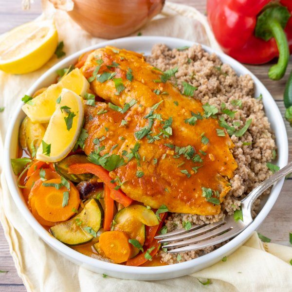

Moroccan Fish, Carrot, Zucchini & Bell Pepper Skillet with Couscous

Prep Time
40 min
Nutrition (per serving)
698.3 kcalCalories
55.4 gProtein
97.3 gCarbs
14.3 gFat
Full nutrition table
| Calories | 698.3 kcal |
| Total fat | 14.3 g |
| Saturated fat | 2.9 g |
| Trans fat | 0.1 g |
| Cholesterol | 85.1 mg |
| Sodium | 236.1 mg |
| Carbohydrates | 97.3 g |
| Fiber | 18.5 g |
| Sugars | 14.3 g |
| Protein | 55.4 g |
| Potassium | 2065.8 mg |
| Calcium | 150 mg |
| Iron | 6.5 mg |
| Vitamin A | 912.2 IU |
| Vitamin C | 125 mg |
| Vitamin D | 210.9 IU |
Cookware
Ingredients
- 2 mediumcarrots
- 32 fl ozchicken or vegetable broth
- 1 small bunchcilantro
- 1 (14.5 oz) candiced tomatoes
- 4 clovesgarlic
- 1lemon
- 2red bell peppers
- 1 ½ lbtilapia fillet
- 4 tbsptomato paste
- 2 cupswhole wheat couscous
- 1 mediumyellow onion
- 2 mediumzucchini squash
- all-purpose flour
- black pepper
- brown sugar
- chili powder
- crushed red pepper
- cumin, ground
- extra virgin olive oil
- paprika
- salt
- turmeric, ground
Steps
- In a medium saucepan, bring broth to a boil. Remove from heat, add couscous, and stir. Cover and let stand for 10 minutes. Uncover couscous and fluff with a fork.24 fl oz (3 cups) chicken or vegetable broth
2 cups whole wheat couscous - Meanwhile, preheat a large nonstick skillet over medium-high heat.
- Pat the fish dry with paper towels and place on a plate. Season with salt and pepper on both sides.1 ½ lb tilapia fillet
½ tsp salt
¼ tsp black pepper - Sprinkle flour over both sides of each fillet and press gently to adhere.2 tbsp all-purpose flour
- Once the skillet is hot, add oil and swirl to coat the bottom. Working in batches if necessary, add fish to the skillet and cook until opaque and cooked through, about 3 minutes per side. Remove to a plate and cover with foil.1 tbsp extra virgin olive oil
- Meanwhile, wash and dry the fresh produce.2 red bell peppers
2 medium carrots
2 medium zucchini squash
1 small bunch cilantro
1 lemon - Seed and slice bell peppers into thin strips. Peel, halve, and thinly slice onion. Peel and thinly slice garlic.1 medium yellow onion
4 cloves garlic - Return skillet to medium-high heat.
- Once the skillet is hot, add more oil and swirl to coat the bottom. Add the bell pepper, onion, and garlic; cook, stirring occasionally, until softened, 5-7 minutes.4 tsp extra virgin olive oil
- Meanwhile, peel and thinly slice carrots. Trim and thinly slice zucchini. Add both to the skillet along with the spices. Cook, stirring constantly, until fragrant, about 1 minute.1 tsp paprika
1 tsp cumin
1 tsp salt
½ tsp chili powder
½ tsp turmeric
¼ tsp black pepper
⅛ tsp crushed red pepper - Stir in the tomatoes, broth, tomato paste, and sugar. Increase temperature to high and bring to a boil; then reduce heat to medium and let simmer, stirring occasionally, until slightly thickened, 3-4 minutes.1 (14.5 oz) can diced tomatoes
8 fl oz (1 cup) chicken or vegetable broth
4 tbsp tomato paste
1 tsp brown sugar - Shave the cilantro leaves off the stems; discard the stems and mince the leaves. Add half of the cilantro to the skillet (reserve the rest for garnish).
- Place fish fillets in the skillet over the vegetables, spooning a thin layer of sauce over the top to cover. Cover with a lid and let simmer until veggies are soft and fish is warmed through, 5-6 minutes.
- Cut the lemon into wedges.
- To serve, divide couscous and vegetable-fish sauté between plates or bowls. Garnish with cilantro and lemon wedges. Enjoy!